01
Player access was indirect
The existing player app had become outdated and unusable, so athletes rarely used it. In practice, players depended on coach-owned iPads or team staff to understand their own data.
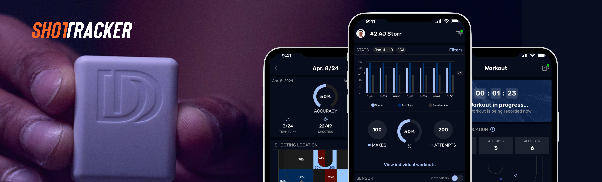
A player-centered mobile experience for athletes to access ShotTracker performance data directly, replacing a neglected legacy app and moving player workflows out of coach-owned tools.
Design Challenge
01
The existing player app had become outdated and unusable, so athletes rarely used it. In practice, players depended on coach-owned iPads or team staff to understand their own data.
02
The broader platform had been shaped around coaches, staff, and operational needs. The mobile product needed to define athletes as a distinct user segment with their own goals, context, and moments of use.
03
Helix already allowed open-ended color selection, but that created brand inconsistency and accessibility risk. Team branding needed rules, not a free-form color wheel.
Key Product Decisions
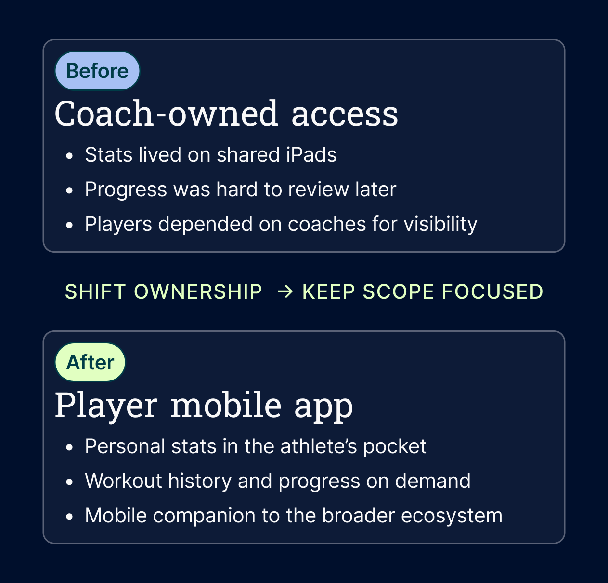
Decision 01
I reframed the mobile app around athlete autonomy instead of adapting coach workflows to a smaller screen. The experience focused on the player’s mental model: checking progress, confirming workouts, and understanding performance in the moments immediately before, during, and after training.
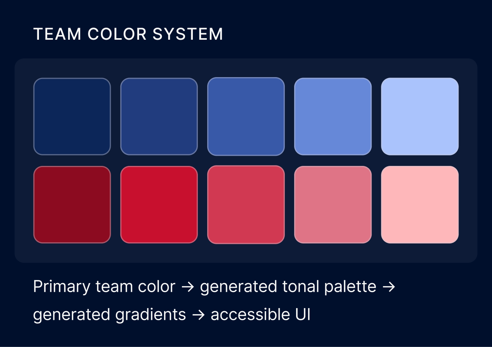
Decision 02
I proposed replacing open-ended color selection with a governed team-color system. Instead of letting users choose any color, the product would use each team’s official primary color and generate tonal values, gradients, and opacity rules programmatically, keeping the UI branded, consistent, and more accessible.
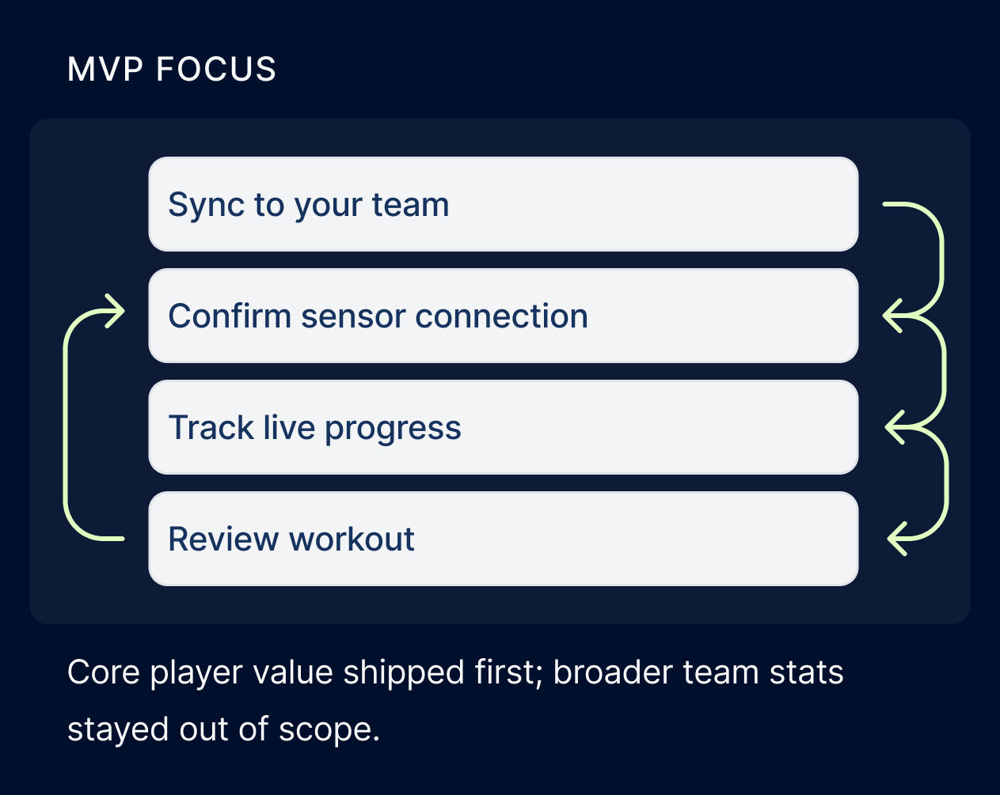
Decision 03
The account and sensor architecture was complex, so I kept the MVP centered on the loop players needed most: personalize the app, see workouts, confirm connection, and track progress live.
Team branding demo
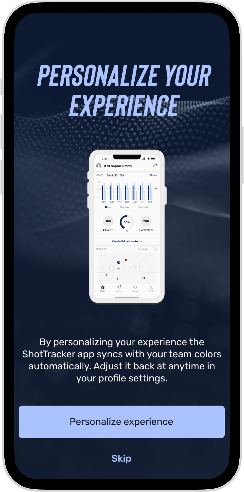
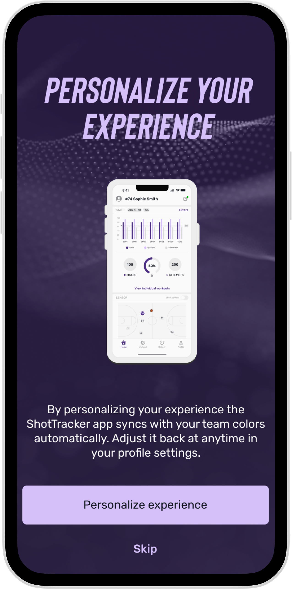
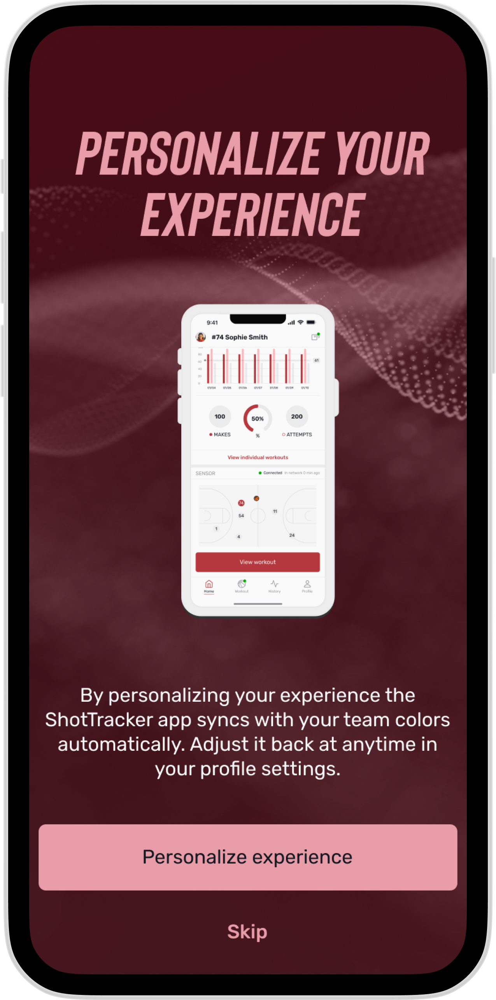
Select an official team identity and the app applies an accessible, consistent color system automatically.
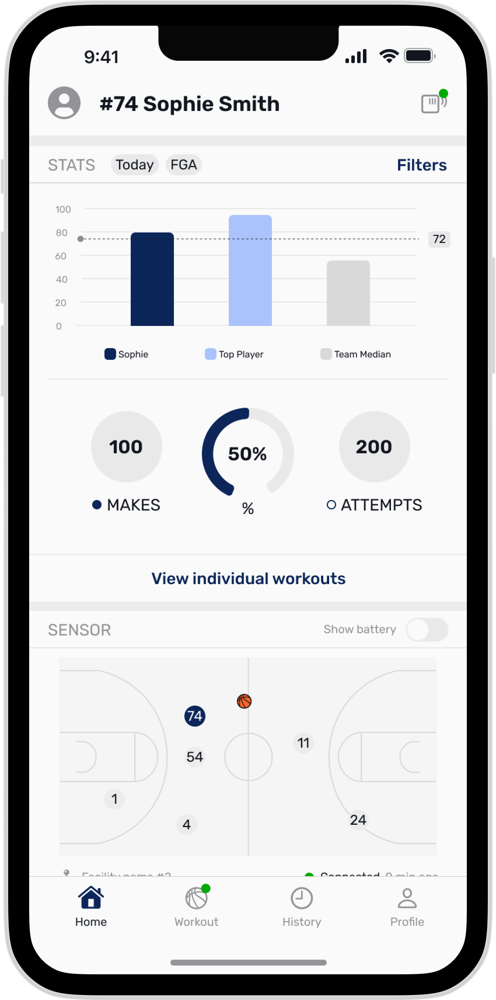
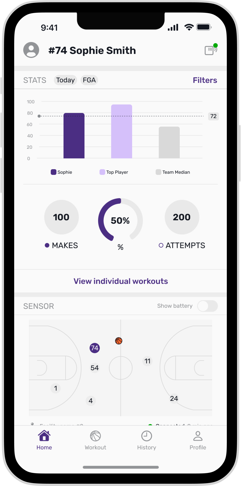
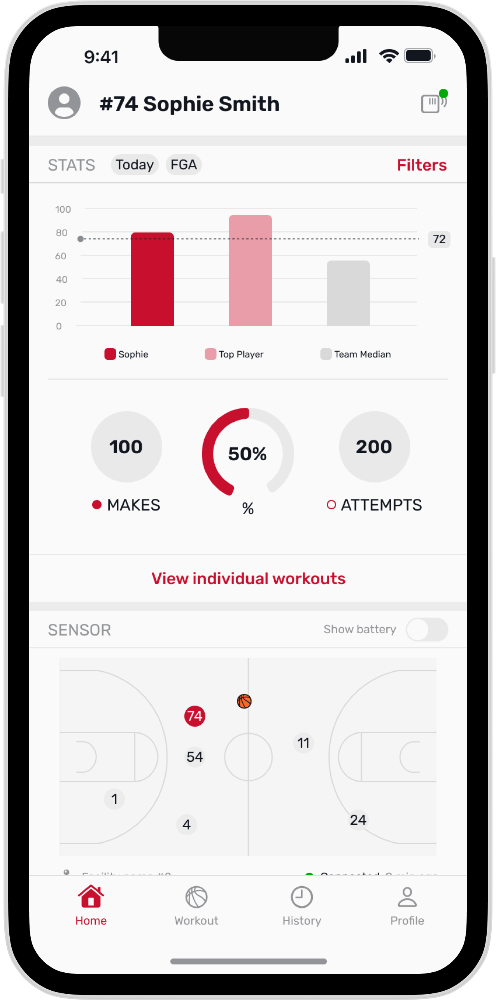
View performance stats and insights from all completed workouts, all in one place.
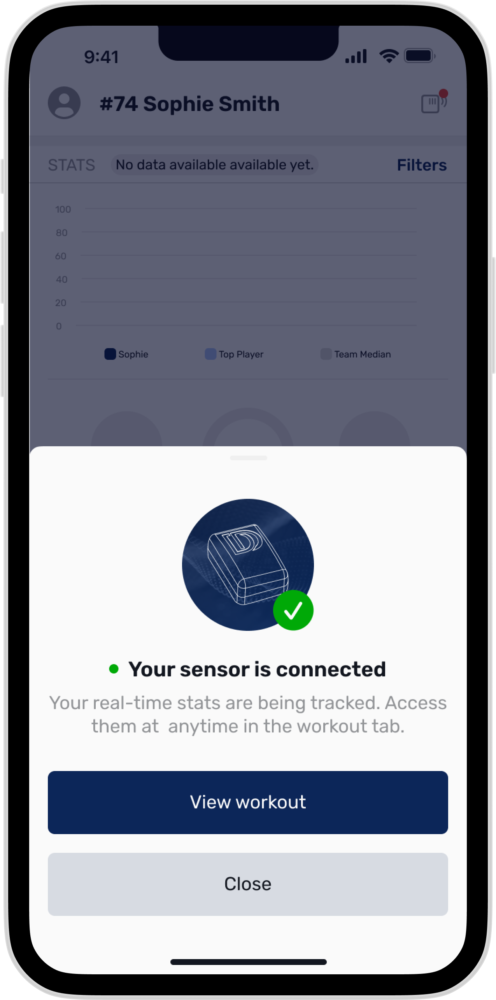
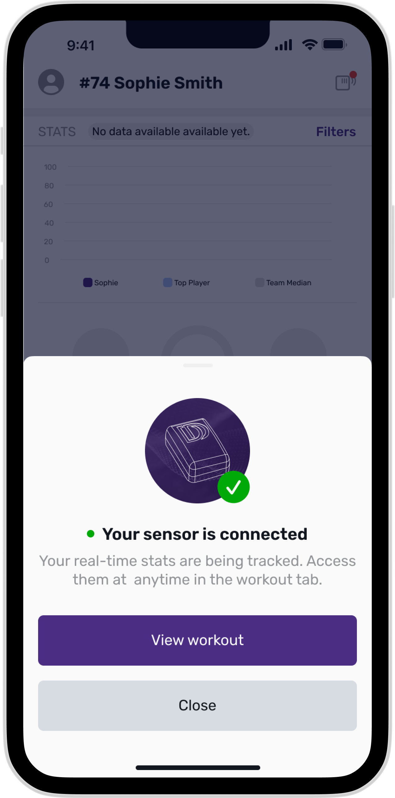
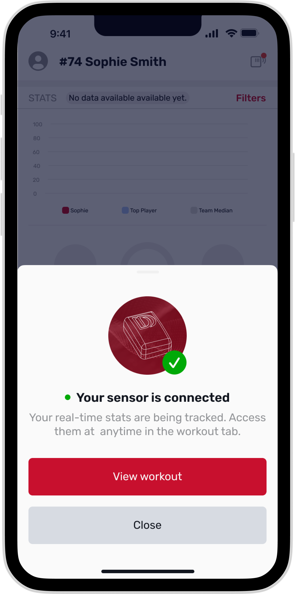
Sensors connect automatically in the gym so you can start tracking right away with no setup.
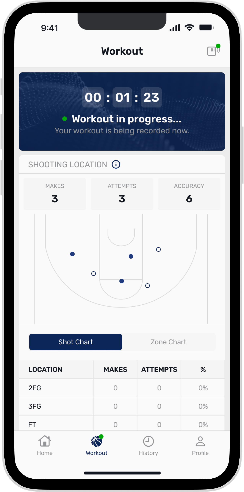
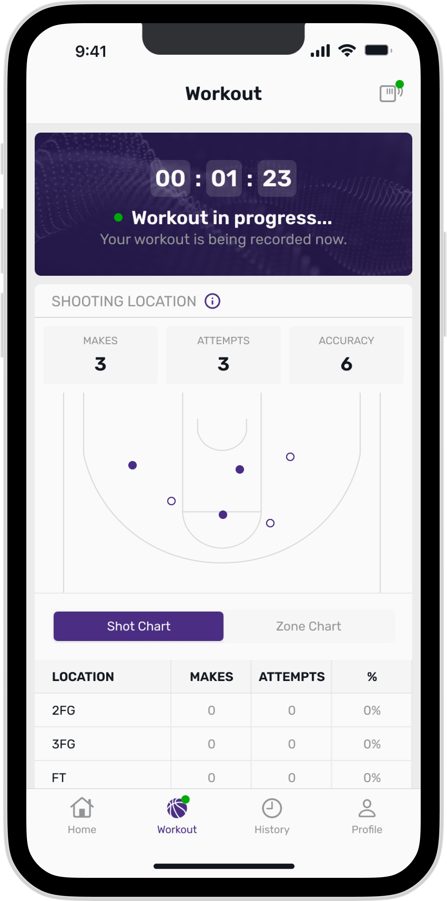
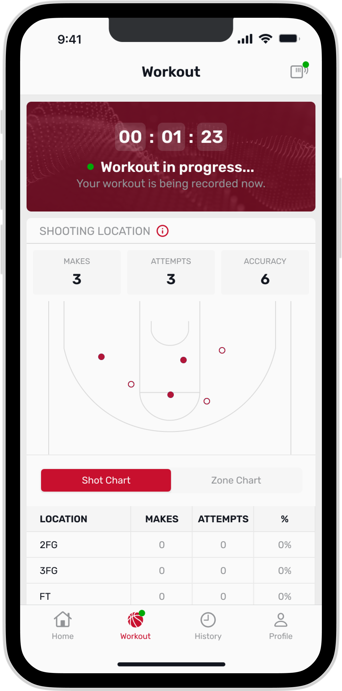
See shot and zone charts update in real time during workouts, so you can track progress live.
Key Decisions
The core design decision was user ownership. Players were not a smaller version of coaches; they had different motivations, access patterns, and success criteria. I used that distinction to separate the player experience from coach workflows and define a product that supported athlete autonomy, live workout feedback, and personal progress.
The team-color system became a product systems decision, not just a visual styling choice. I moved personalization from individual taste to brand governance: engineering could select an official team primary color, and the interface would derive the supporting tonalities, gradients, and opacity values. That made the product feel connected to each program while reducing accessibility risk, improving consistency, and making the approach scalable across many teams.
Reflection
This project reinforced how much product design changes adoption. The legacy player app had been engineering-led, with outdated UX, weak usability, and enough technical debt that the engineering team recommended rebuilding from scratch. It was a clear example of how even useful data can go unused when the experience around it does not support the people expected to use it.
The rebuild gave players a more independent way to train. Instead of relying on a shared iPad or a coach-controlled workflow, athletes could start workouts on their own phone, train individually or with a group, and see stats that were tied to their own performance. That shift made the product more personal, more useful, and more likely to become part of a player’s routine.
It also showed how systems thinking can make personalization feel custom without becoming fragile. The team-color model gave players a product that felt connected to their program while giving design and engineering a controlled, accessible framework that could be reused beyond the first release.
Outcomes
Players in testing said they’d likely use the app.
Player adoption rate in the first 3 months
Featured in University of Kansas Instagram promo video.
Launch Context
The mobile app was later shown in a promotional video with University of Kansas athlete AJ Storr, giving the product a real launch context beyond static screens.
I’m happy to walk through the full design process and decisions behind the product.
Contact me